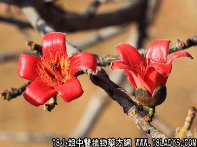

木棉根(中草药名称:木棉)(科目:木棉科)

古籍名：木棉《本草纲目》。
别名：英雄树根。
生长环境：本品为落叶乔木。生于热带地区山野间。
分布：我国南部、印度和马拉西亚、广州附近常见。
入药部分：花、根
采集期：全年采根皮、二三月采花，不拘时采寄生部。
自采地点：郊野。
性味：性微寒、味淡。
功能：去湿热、除痰火、解毒。
主治、用量和用法：1、筋骨湿火痛、痹症：干用根2两、清水煎服；2、大肠湿热，疴血：用法同上。
附录：（花）治湿热下痢：用干花5钱至1两，煲粥食。
验方：（治湿热下痢方）木棉花5钱、葛花3钱、鸡蛋花3钱、槐花3钱、银花3钱、清水两碗半，煎成一碗温服。
（方解）方中木棉花、鸡蛋花、银花、能清大肠湿热；槐花、葛花，利尿解酒湿，为常用于倡导轻度湿热之通方，能作清凉饮料用。
（方歌）湿热下痢五般花，金银木棉鸡蛋花，槐花葛花同一煎，去湿清热效堪称嘉。
（皮）：即海桐皮，去湿、消肿、解毒。
参考资料：《广东中医》（1960年8月第五卷）木棉花复方治41例痢疾全部全愈。处方：木棉花、野麻草、叶下红、凤尾草、马齿苋、白头翁、蜂蜜。
《广东中医验方选集第一集》市一人民医院治便后下血验方：木棉树皮两半，加猪肉3或4两，煲汤服。